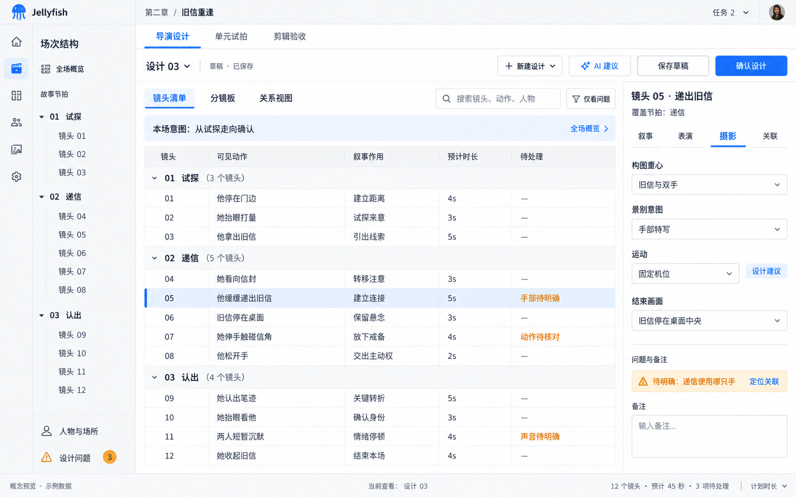
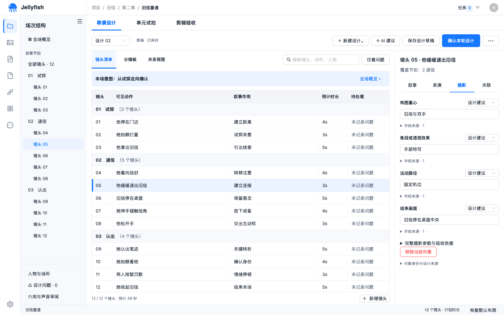
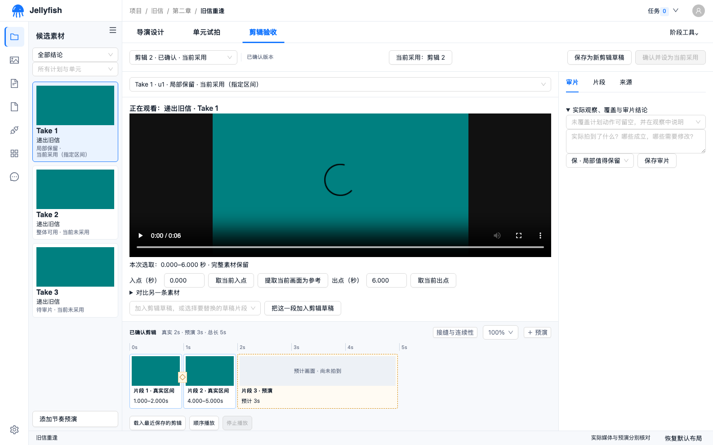

已确认参考
实际前端
边界核对
| 区域 | 实际值 | 依据 |
|---|
| 顶栏／全局导航 | 48px／64px | 参考 A |
| 业务导航 | 208px，左缘64px，顶缘48px | 参考 A |
| 阶段／版本／视图栏 | 48px／64px／56px | 参考 A |
| 右详情 | 344px，左缘1242px | 参考 A/B |
| 底部状态 | 32px | 参考 A |
业务文案、真实字段状态、历史来源选择和可编辑表单按现有契约呈现；关系图根据真实引用分支，字段缺失不会生成假关联。布局测量原始记录 · 分镜与关系专项记录 · 56个首屏可达场景
剪辑验收 · 实际页面
青色画面为六秒合成验收视频，用于核对媒体加载、真实区间、重复采用及时间线布局。
